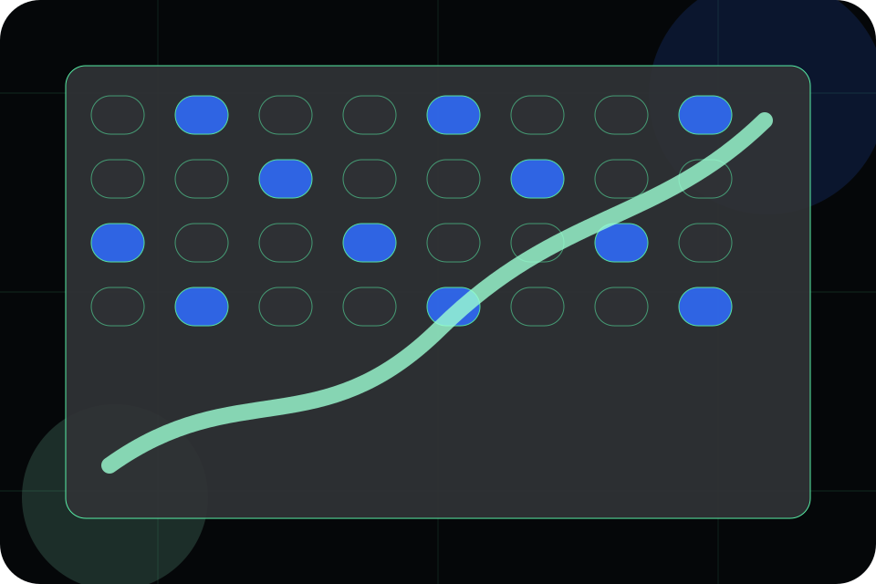
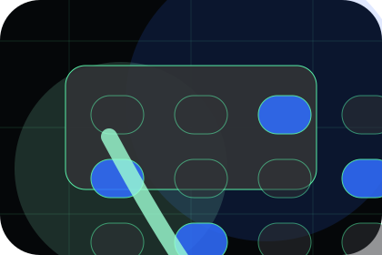
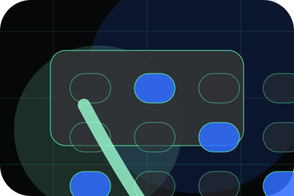
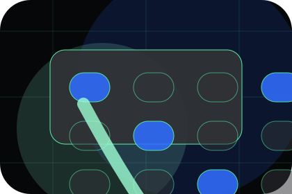
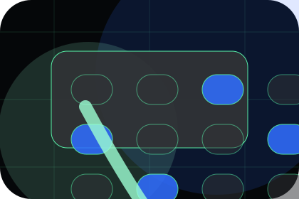
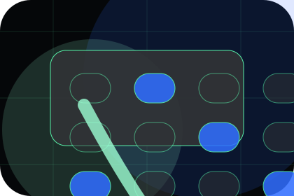
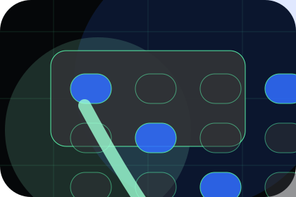
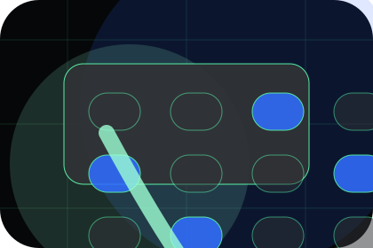
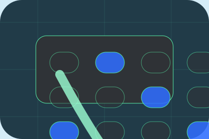

Evidence
Visible proof that helps visitors believe the claims behind pharma.
Partners / 01
Partners opens as a clear life sciences decision hub: what Helix offers, who it helps, why it matters, and which route to take first.
The first screen combines positioning, proof, primary action, and fast internal navigation, so people can act immediately or compare the rest of the partners route with context.
AI biology lab hero
Select the closest route and Helix keeps the next step, proof, and follow-up expectation aligned with evidence and scientific credibility.

Partners / 02
Pharma gives the proof layer for partners: standards, evidence, and reassurance that make the next decision feel grounded.
Instead of relying on vague claims, Helix presents visible standards, process cues, and proof artifacts that help life sciences visitors judge fit.
Explore PartnersVisible proof that helps visitors believe the claims behind pharma.
The quality, safety, or operating expectation this section makes explicit.
What becomes clearer before someone decides whether to discuss the research fit.
Partners / 03
Academic gives the proof layer for partners: standards, evidence, and reassurance that make the next decision feel grounded.
Instead of relying on vague claims, Helix presents visible standards, process cues, and proof artifacts that help life sciences visitors judge fit.
Explore PartnersVisible proof that helps visitors believe the claims behind academic.
The quality, safety, or operating expectation this section makes explicit.
What becomes clearer before someone decides whether to discuss the research fit.
Partners / 04
Clinical gives the proof layer for partners: standards, evidence, and reassurance that make the next decision feel grounded.
Instead of relying on vague claims, Helix presents visible standards, process cues, and proof artifacts that help life sciences visitors judge fit.
Explore Partners
Visible proof that helps visitors believe the claims behind clinical.

The quality, safety, or operating expectation this section makes explicit.

What becomes clearer before someone decides whether to discuss the research fit.
Partners / 05
Licensing gives the proof layer for partners: standards, evidence, and reassurance that make the next decision feel grounded.
Instead of relying on vague claims, Helix presents visible standards, process cues, and proof artifacts that help life sciences visitors judge fit.
Explore PartnersVisible proof that helps visitors believe the claims behind licensing.
The quality, safety, or operating expectation this section makes explicit.

What becomes clearer before someone decides whether to discuss the research fit.
Partners / 06
Models gives the proof layer for partners: standards, evidence, and reassurance that make the next decision feel grounded.
Instead of relying on vague claims, Helix presents visible standards, process cues, and proof artifacts that help life sciences visitors judge fit.
Explore PartnersVisible proof that helps visitors believe the claims behind models.
The quality, safety, or operating expectation this section makes explicit.

What becomes clearer before someone decides whether to discuss the research fit.
Partners / 07
Benefits defines the better state Helix is built to create, with enough detail to make the promise believable.
A research platform story built around AI discovery, phase tables, partner proof, and data-scale credibility. The section grounds that direction in concrete benefits, visible tradeoffs, and a next route visitors can use when the promise feels relevant.
Explore PartnersHelix structures benefits around better state, practical gain, and a clear next route so visitors can compare the block quickly before they discuss the research fit.
Discuss ResearchPartners / 08
Process explains the operating sequence so visitors can see how the first request becomes a clear recommendation and follow-up.
The steps are written from the visitor side: what they do first, what Helix clarifies, what they receive, and how support continues.
Explore PartnersHow visitors begin this route and what detail is useful at the first step.
What Helix reviews, filters, or explains before recommending the next move.
What the visitor receives afterward, including support, proof, or a handoff to the next page.
Partners / 09
Fit gives the proof layer for partners: standards, evidence, and reassurance that make the next decision feel grounded.
Instead of relying on vague claims, Helix presents visible standards, process cues, and proof artifacts that help life sciences visitors judge fit.
Explore Partners

Visible proof that helps visitors believe the claims behind fit.
Partners / 10
Helix closes the partners route with a clear action, a quick reminder of the value, and a low-friction way to discuss the research fit.
Visitors who are ready can use the primary action. Visitors who are still comparing can scan the section links, proof, and support routes before they discuss the research fit.
Discuss ResearchThe final block keeps the choice simple: act now, compare one more proof route, or send enough detail for a focused response.
Discuss Researchevidence and scientific credibility
A research platform story built around AI discovery, phase tables, partner proof, and data-scale credibility. Partners ends with a direct path to discuss the research fit, plus enough context for visitors who still need to compare.

Discuss ResearchInformation is provided for planning and should be reviewed for the final client, location, and operating rules.